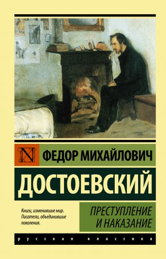

Описание
Одно из «краеугольных» произведений русской и мировой литературы, включенный во все школьные и университетские программы, неоднократно экранизированный роман Достоевского «Преступление и наказание» ставит перед читателем важнейшие нравственно-мировоззренческие вопросы — о вере, совести, грехе и об искуплении через страдание. Опровержение преступной «идеи-страсти», «безобразной мечты», завладевшей умом Родиона Раскольникова в самом «умышленном» и «фантастическом» городе на свете, составляет основное содержание этой сложнейшей, соединившей в себе несколько различных жанров книги. Задуманный как «психологический отчет одного преступления», роман Достоевского предстал перед читателем грандиозным художественно-философским исследованием человеческой природы, христианской трагедией о смерти и воскресении души.